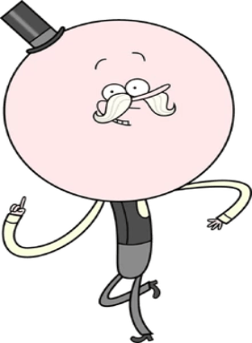

Mordecai es uno de los protagonistas de la serie Un Show Más. Mordecai es un arrendajo azul (denominado comúnmente como azulejo). Mordecai se describe mejor como apacible. Al igual que Rigby, no usa ropa, juega Videojuegos, y bebe grandes cantidades de café y gaseosa. Fuera del dúo, Mordecai muestra mucha más paciencia y responsabilidad que Rigby. A pesar de que casi todos los problemas en cada episodio que son causados por ambos, ya que no sólo es culpa de Rigby pone al día con su pereza y su falta de madurez. Tiende a ser más sociable y amigable que Rigby, y maneja mejor las relaciones con los demás. A pesar de que Mordecai, naturalmente, desprecia el trabajo, se esfuerza por mantener una buena reputación. A veces, le pega a Rigby y hace lo que quiere y entiende mucho mejor sobre como caerle bien a las chicas.
Rigby (cuyo nombre real era Rigbone, aunque cuando cambió su nombre en Barco Basurero quedó como Rigby) es uno de los personajes principales de la serie Un Show Más. Es un mapache castaño que trabaja como Jardinero del Parque con su mejor amigo, Mordecai. Rigby se describe mejor como un: "Adolescente Salvaje". Su comportamiento es muy predecible. Rigby es ágil, astuto, arrogante, irresponsable, impaciente y pasivo en todo momento, dándole la personalidad de un niño. Lo contrario a la personalidad de Mordecai, que demuestra responsabilidad y templanza mucho más que él (en la mayoría de los casos).
Benson Dunwoody es uno de los personajes principales de la serie Un Show Más. Es una máquina de chicles humanoide, así como el gerente del Parque. Él es el jefe de todos los trabajadores del parque. Es muy alocado, arrogante y engreído, y tiene un carácter muy fuerte, tiene la tendencia de regañar a Mordecai y a Rigby cuando no están trabajando y cuando están flojeando, siempre está pendiente de ellos de lo que hacen, hasta en las raras ocasiones donde sí trabajan.
Mega-Kranus llamado Papaleta Maellard (Pops Maellard en Estados Unidos y en España) fue uno de los personajes principales de la serie Un Show Más. Papaleta se encuentra en un estado de ánimo optimista perpetuo, hasta cierto punto infantil, amable y muy sensible. Él puede ser mejor descrito como burbujeante y efervescente la mayor parte del tiempo, teniendo interés en las cosas pequeñas. Sin embargo, Papaleta no es un ser alegre cuando se le falta el respeto, y cuando esto sucede él hace lo inusual.
Skips Quippenger (más conocido como Skips, anteriormente llamado Walks, el cual es su verdadero nombre) es uno de los protagonistas de la serie Un Show Más. Skips es un yeti inmortal y el empleado más dedicado del Parque. Mantiene todo funcionando a la perfección. Como ha vivido ahí por siglos y siglos conoce el parque como la palma de su mano. También sabe las cosas que le pasan a Mordecai y a Rigby. Él ayuda mucho a Benson y corrige los errores de Mordecai y Rigby.
Mitch "Musculoso" Sorrenstein (Muscle Man en Estados Unidos y Musculitos en España) es uno de los personajes Principales de la serie Un Show Más. Él es uno de los Jardineros del Parque. Él es un ogro verde, gordo y/o humanoide desfigurado, que a menudo es visto con su mejor amigo Fantasmín.
Fantasmín (Fantasmano en los primeros y últimos episodios, High Five Ghost en Estados Unidos, Hi-Five Ghost o Fives abreviado, Fantasma Chócala o abreviadamente Chócala en España) es uno de los personajes principales de Un Show Más. Es un fantasma que trabaja junto a su mejor amigo Musculoso como jardinero en el Parque.A pesar de ser muy callado parece tener una personalidad más social ya que le gusta hacer el papel del amigo de Musculoso cuando se va. Tiene la voz un tanto aguda. Le gusta divertirse tanto como a Musculoso, además le gustan los chistes de Musculoso sobre Mi Mami.
Eileen (pronunciado como Eilín en Latinoamérica y pronunciado como Aylín en los primeros episodios en España) es una fusión de topo-humana de 23 años. Ella trabaja como mesera en el mismo lugar que anteriormente trabajaba Margarita, la cual es su mejor amiga. Eileen es algo tímida, aunque también es inteligente como se mostró en Acampar puede ser genial, y también amable. Cuando habla con sus amigos se le ve tranquila, aunque con Rigby se muestra un poco nerviosa. Es trabajadora y trata de ser entretenida con Rigby aunque este no le preste mucha atención. Es una planificadora nata, que puede sucumbir a la presión, pero en las ocasiones más problemáticas puede tomar las riendas y hacerse cargo por sí misma. También sabe analizar las cosas, sentimientos, emociones, tiene un ojo para ver a través de las personas.
Margarita Smith (Margaret en Estados Unidos y en España) es un cardenal rojo, que trabajaba como una mesera en la Cafetería, al otro lado del parque, donde trabajan Mordecai y Rigby. Ella es uno de los pocos personajes Animales en la serie que usa ropa. Mordecai se sentía atraído por ella, y siempre estaba buscando excusas para ir a la Cafetería a verla. Margarita es muy tranquila y casi siempre se la ve sonriendo. Ella ya sabe los sentimientos que Mordecai tiene hacia ella. Acostumbra a tener muchos novios, porque quiere poner a Mordecai celoso, pero en estos tiempos Margarita no ha tenido novios. Ella es paciente y a veces es romántica con Mordecai. Es extrovertida, abierta y a muchos les cae bien.
Thomas (Nikolái) era un personaje principal que hizo su debut en el episodio "Salida 9B" y es el trabajador del parque más reciente de la serie Un Show Más. Él trabaja como pasante para el parque.
CJ es la protagonista secundaria de Un Show Más desde la Quinta Temporada, y la actual exnovia de Mordecai, aunque comenzó como un personaje menor en la serie. CJ es alguien amable, relajada y Mordecai la considera alguien muy genial con quien comparte varios gustos como los videojuegos, aunque se preocupa profundamente por sus amigos. También suele ser muy competitiva y burlona con los demás, aunque suele ser de buen humor. Sin embargo, CJ también tiene problemas de ira muy extremos al punto de transformarse en una nube tormentosa y gigante que causa una lluvia y genera que caigan rayos de ella. Le resulta difícil controlar sus emociones negativas hasta el punto de que puede volverse violenta cuando está enojada y/o molesta o cuando reacciona de forma exagerada ante algo, como un malentendido, y por lo general actúa de manera irracional y entra en su estado de tormenta sin ella sabiendo toda la historia, o sin que la otra persona se explique como sucedió.